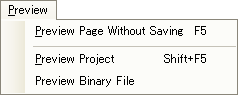
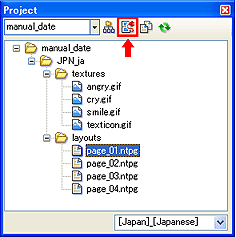

作成したページはPCでプレビューする他に、IS-NITRO-EMULATORや、IS-TWL-DEBUGGER ハードウェア等の、開発機材でもプレビューできます。
プレビューには作成中のページを1ページだけプレビューする方法と、プロジェクト全体をプレビューする方法、作成した説明書のバイナリファイルをプレビューする方法があります。
作成中のページを保存せずにプレビューできます。
プレビューしたいページウィンドウをアクティブにし、[プレビュー]→[ページを保存せずプレビュー]を選択します。

作成中のページがプレビューされます。
プロジェクトウィンドウのプレビューボタンで、プロジェクトに含まれる保存済みのページを全てプレビューできます。

プロジェクトウィンドウのボタン押す他に、メインメニューの[プレビュー]→[プロジェクトをプレビュー]でもプロジェクトをプレビューできます。